基本資訊
國名
蒙迪斯總管司(英文:Mounddies Headgovern 德文:Mounddies Headgovern 法文:Mounddies Headgovern 義大利文:Mounddies Headgovern 日文:もんつきふくおりょう)
地理位置
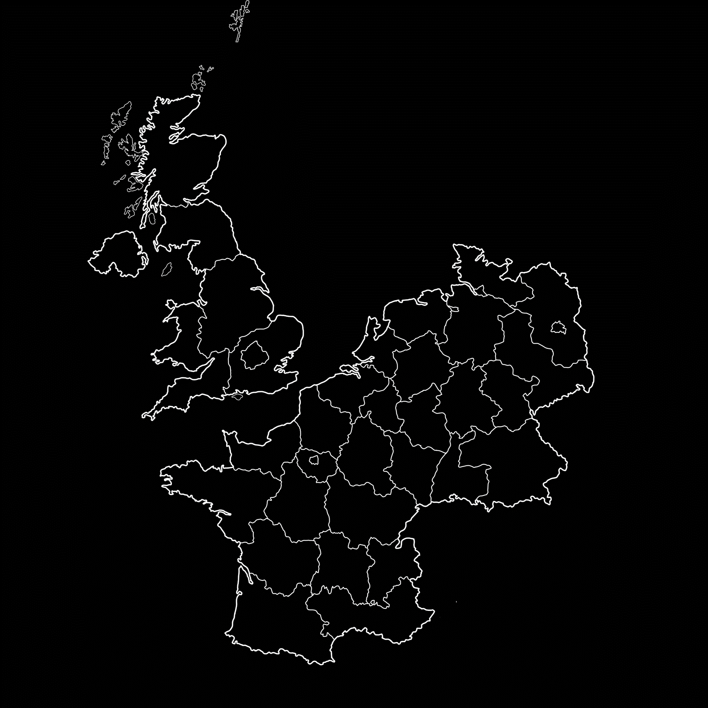宣稱領土包含英國、法國、德國、比利時、荷蘭
實際領土包含台灣台南，日本札幌、新千歲
司旗
| 顏色 | 色號(sRGB) | 意義 |
|---|---|---|
| 海軍藍 | #1F4E79 | 博愛 |
| 夕陽金 | #BF9000 | 誠信 |
| 純白色 | #FFFFFF | 和平 |
| 文山綠 | #548235 | 穩定 |
司徽
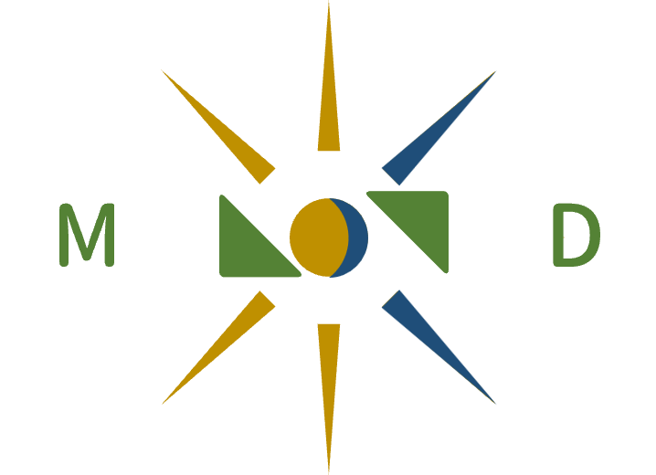司徽由海軍藍和夕陽金組成一個"權力之心"，其個別代表夕陽院(監察院)和月海院(行政院)，其中夕陽金占了五分，海軍藍占了三分，也寓意"主權在民"的概念
政府組成
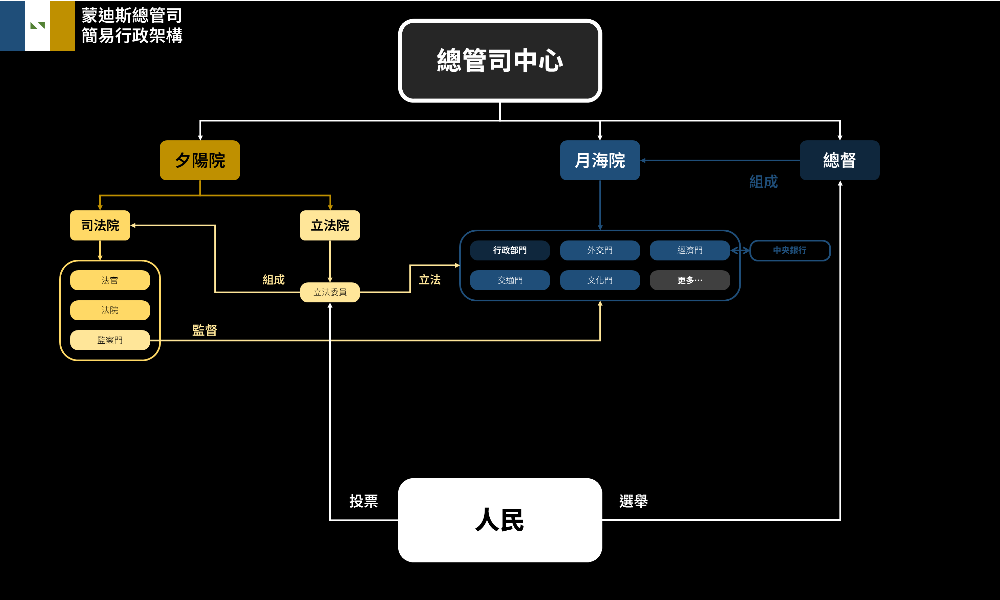外交名單 / 加入組織
外交名單 Diplomatic List
| 編號 | 外交等級 | 國家代號 | 國家名 | 日期 | 國旗 |
|---|---|---|---|---|---|
| 🔶大使級 | |||||
| 01 | 🔶大使級 | SFR | 蘇華聯邦共和國 | 2024/09/29 | 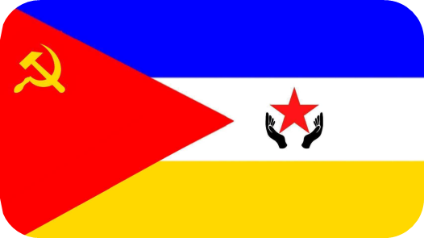 |
| 02 | 🔶大使級 | DT | 丹特聯邦共和國 | 2024/10/03 | |
| 03 | 🔶大使級 | HZS | 華辰沙光顧國 | 2024/11/09 | 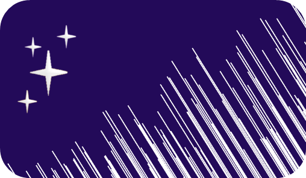 |
| 04 | 🔶大使級 | TKU | 津輕黑石東亞主權聯合民主共和國聯盟 | 2024/11/10 | |
| 05 | 🔶大使級 | LR | 拉納卡共和國 | 2024/11/15 | |
| 06 | 🔶大使級 | NR | 納爾斯聯邦 | 2024/12/08 | |
| 07 | 🔶大使級 | CCL | 盧米涅企業共和國 | 2024/12/08 | 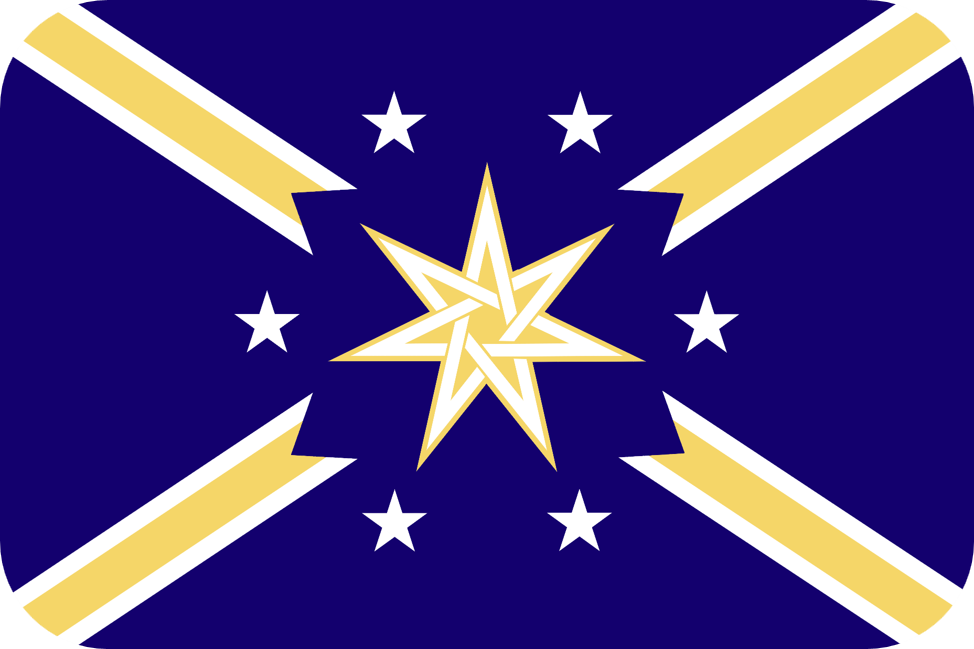 |
| 08 | 🔶大使級 | SAR | 薩爾多利亞共和國 | 2024/12/10 | |
| 09 | 🔶大使級 | KR | 克維爾帝國 | 2024/12/17 | 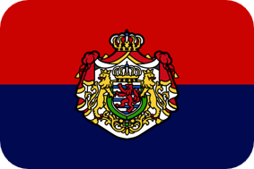 |
| 10 | 🔶大使級 | MSFM | 晨弦霧月共和國 | 2024/12/17 | |
| 11 | 🔶大使級 | SHK | 聖赫提斯王國 | 2024/12/31 | |
| 12 | 🔶大使級 | CW | 彩維利亞 | 2025/01/02 | 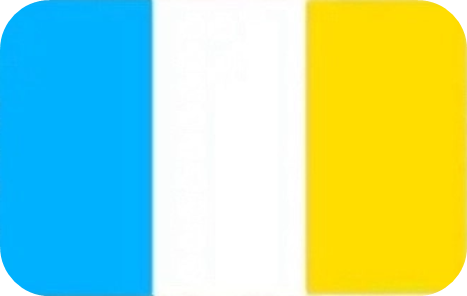 |
| 13 | 🔶大使級 | HZFR | 紅花坂聯邦 | 2025/01/10 | |
| 14 | 🔶大使級 | SRS | 斯維特拉克社會主義共和國 | 2025/01/18 | 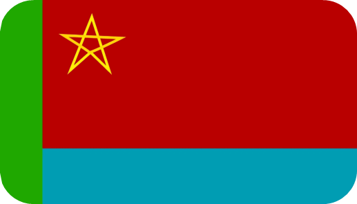 |
| 15 | 🔶大使級 | TTS | 塔爾塔洛斯聯合議會共和國聯邦 | 2025/01/22 | 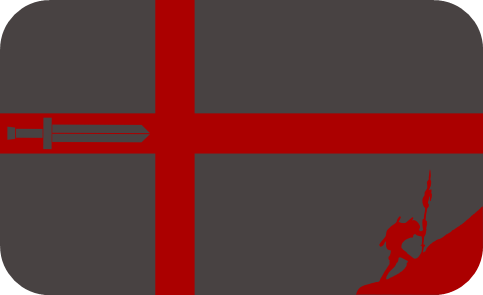 |
| 16 | 🔶大使級 | FOR | 紅石聯邦共和國 | 2025/01/26 | |
| 17 | 🔶大使級 | FROW | 西瓜聯邦共和國 | 2025/02/17 | 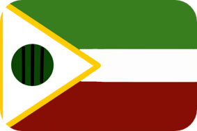 |
| 18 | 🔶大使級 | NCR | 中蓮共和國 | 2025/03/17 | |
| 19 | 🔶大使級 | YSSF | 約克塞斯蘇維埃社會主義聯盟 | 2025/03/25 | |
| 20 | 🔶大使級 | NGL | 北格蘭共和國 | 2025/04/04 | |
| 21 | 🔶大使級 | DRZ | 正介民國 | 2025/04/10 | 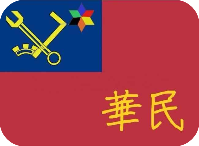 |
| 22 | 🔶大使級 | OFE | 奧沃特聯邦帝國 | 2025/04/20 | |
| 23 | 🔶大使級 | KWL | 威爾蘭王國 | 2025/05/04 | |
| 24 | 🔶大使級 | CDR | 華原民國 | 2025/05/04 | |
| 01 | 🔶大使級 | HJS | 華江斯坦君憲國 | 2025/05/04 | |
| 25 | 🔶大使級 | NFD | 新法德利亞聯邦 | 2025/05/07 | 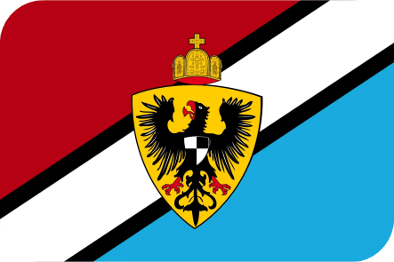 |
| 26 | 🔶大使級 | ROL | 荷月聯邦共和國 | 2025/05/19 | |
| 27 | 🔶大使級 | ROL | 利薩尼亞共和國 | 2025/05/23 | 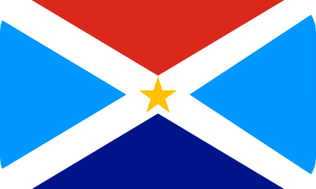 |
| 28 | 🔶大使級 | KH | 和爾尼亞王國 | 2025/05/30 | 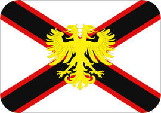 |
| 29 | 🔶大使級 | WME | 黃名帝國 | 2025/05/31 | 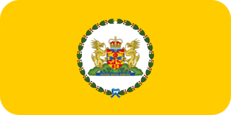 |
| 30 | 🔶大使級 | FRTB | 超渡嗜血聯邦共和國 | 2025/06/15 | 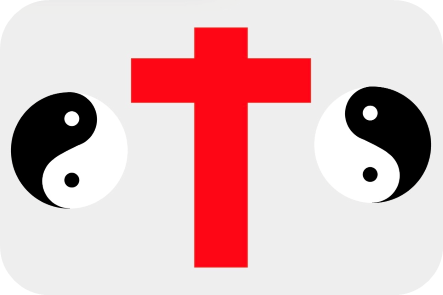 |
| 31 | 🔶大使級 | YE | 炎夏帝國 | 2025/06/15 | 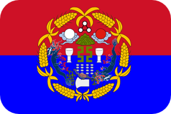 |
| 32 | 🔶大使級 | KOC | 卡利斯托利亞王國 | 2025/06/15 | |
| 33 | 🔶大使級 | FDH | 華陽聯邦民主共和國 | 2025/06/15 | 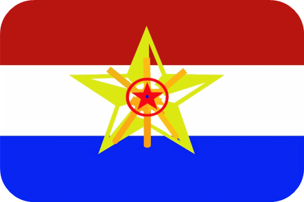 |
| 34 | 🔶大使級 | ROH | 和曦民國 | 2025/08/07 | 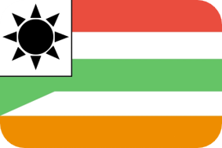 |
| 35 | 🔶大使級 | PUGA | 迦德阿維亞共主邦聯 | 2025/08/07 | |
| 36 | 🔶大使級 | NESQ | 內思庫徹共和國 | 2025/08/17 | |
| 37 | 🔶大使級 | RPO | 獵戶座人民共和國 | 2025/08/17 | 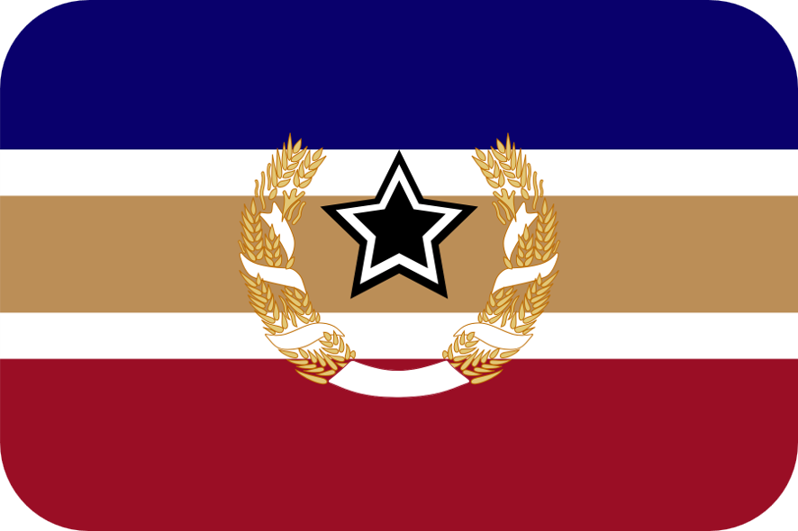 |
| 38 | 🔶大使級 | MFD | 蒙費朗共和國 | 2025/08/17 | 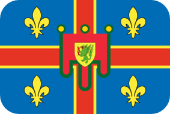 |
| 39 | 🔶大使級 | MSV | 馬思唯亞王國 | 2025/08/18 | 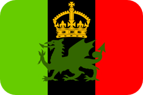 |
| 40 | 🔶大使級 | DRC | 卡特蘭共和國 | 2025/08/18 | 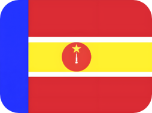 |
| 🔸公使級 | |||||
| 01 | 🔸公使級 | SDR | 南約民主共和國 | 2025/03/12 | 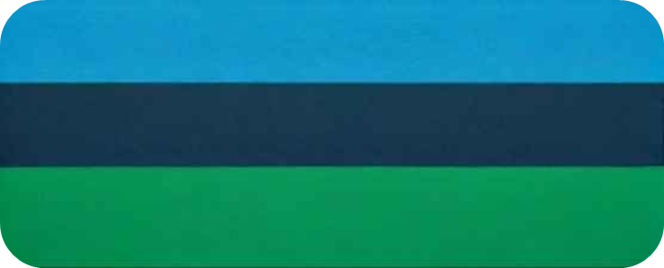 |
| 02 | 🔸公使級 | DRN | 南茗民主共和國 | 2025/03/13 | |
| 03 | 🔸公使級 | VIS | 布埃納維斯塔聯邦共和國 | 2025/03/16 | |
| 04 | 🔸公使級 | FRK | 坤曼民主聯邦共和國 | 2025/06/15 | 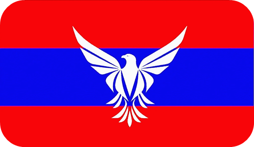 |
| 05 | 🔸公使級 | SDR | 德納斯社會民主主義共和國 | 2025/06/16 | |
| 🔷代表級 | |||||
外交名單 Joined the organization list
| 編號 | 組織名稱 | 英文代號 | 加入日期 | 組織旗幟 |
|---|---|---|---|---|
| 01 | 微國國際民航組織 | MISCAO | 2024/10/25 | |
| 02 | 聯合微國家組織 | FUMO | 2024/11/03 | |
| 03 | 北嶺聯盟 | BA | 2024/11/15 | 暫無 |
| 04 | 微國家聯盟 | MU | 2025/03/22 | |
| 05 | 微國國際聯盟 | ONV | 2025/08/17 |
政府組成
歷史
無國界時期
(2024/09/12 – 2024/10/13)
蒙迪斯總管司的歷史始於一個獨特的時期，當時它還被稱為「無國界蒙迪斯總管司」。這個實體並非傳統意義上的國家，而是一個以分散式治理和開放協作為核心的實驗性組織。在 2024 年 9 月 12 日成立之初，它旨在探索超越地理界限的社會運作模式。其核心理念是服務與管理，致力於為全球範圍內的需求提供協助與支援。這段時期，無國界蒙迪斯總管司主要透過線上平台和分散式網路進行運作，吸引了來自不同背景的參與者，共同協作解決問題，並探索新的社會組織形態。儘管不具備主權國家的任何特徵，但這段時間的理念實驗為後來的發展奠定了基礎。
第一白色時期
(2024/10/13 – 2025/01/25)
2024 年 10 月 13 日，無國界蒙迪斯總管司經歷了一次重要的轉型，正式更名為「蒙迪斯總管司」，並開始明確其作為一個國家實體的各項基本要素。這標誌著從一個非傳統組織向主權國家過渡的開端。在此期間，蒙迪斯總管司逐步確立了其領土範圍、國界、常住人口、政府組織、法律體系以及貨幣等國家要素。
政府架構在這一時期逐漸成形，確立了總管制的領導模式，旨在維持高度的效率與服務性。法律的制定著重於公平與透明，以保障公民權利並規範社會秩序。同時，蒙迪斯總管司也開始規劃其經濟體系，並發行了專屬貨幣，以支持其內部運作與發展。雖然對外活動仍處於初步階段，但內部基礎建設的完成，為其未來參與國際事務奠定了堅實的根基。
總管司時期
(2025/01/25 – 至今)
自 2025 年 1 月 25 日起，蒙迪斯總管司正式進入了其「總管司時期」。此階段的重點是積極參與國際事務並拓展對外關係。蒙迪斯總管司開始向國際社會展現其作為一個主權國家的形象與價值觀。
在此期間，蒙迪斯總管司積極尋求加入各種國際組織。這些努力旨在與其他國家建立外交關係，共同應對全球挑戰，並促進國際合作。蒙迪斯總管司將其服務與管理的核心理念融入到外交政策中，致力於在國際舞台上扮演一個負責任且建設性的角色。隨著對外活動的增加，蒙迪斯總管司也將面臨更多國際法規、貿易協定和文化交流的議題，進一步完善其國家治理體系，並鞏固其在國際社會中的地位。
外交資料
邦交須知
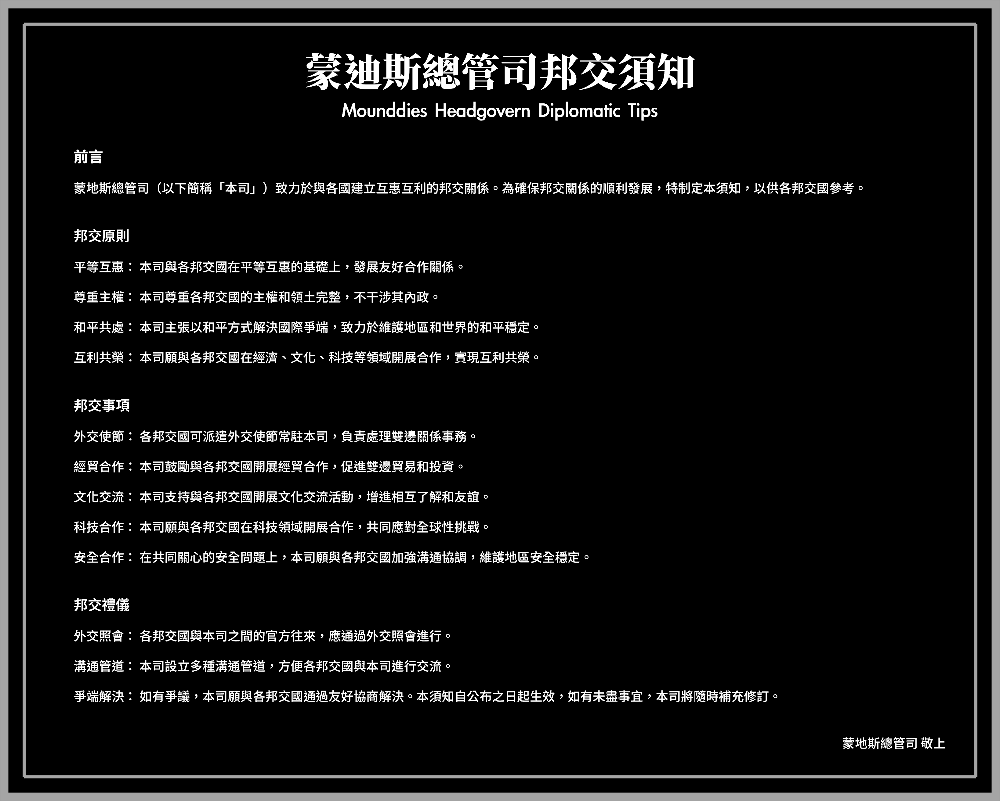邦交申請
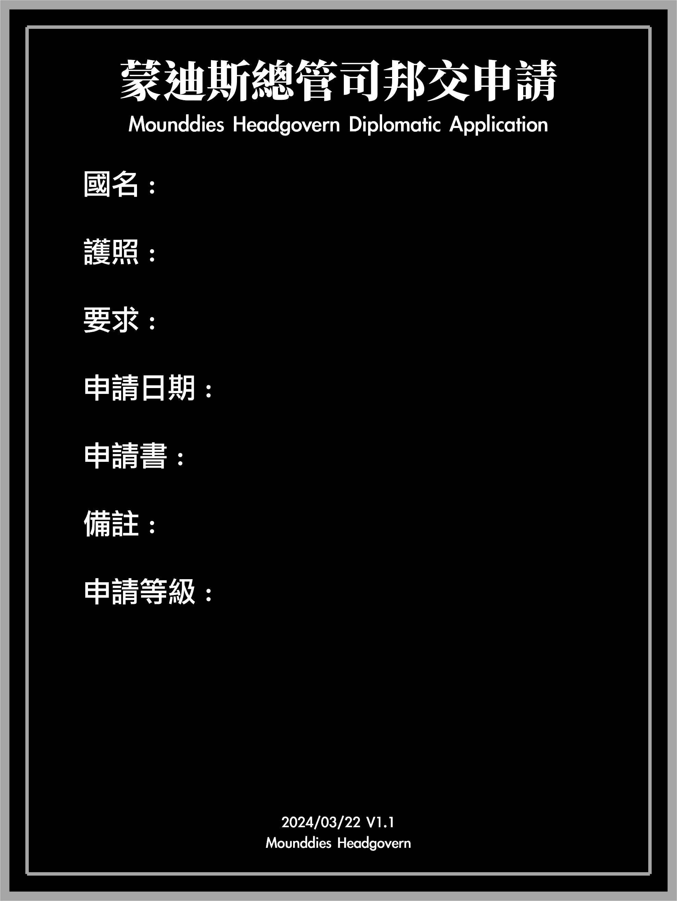建交公報
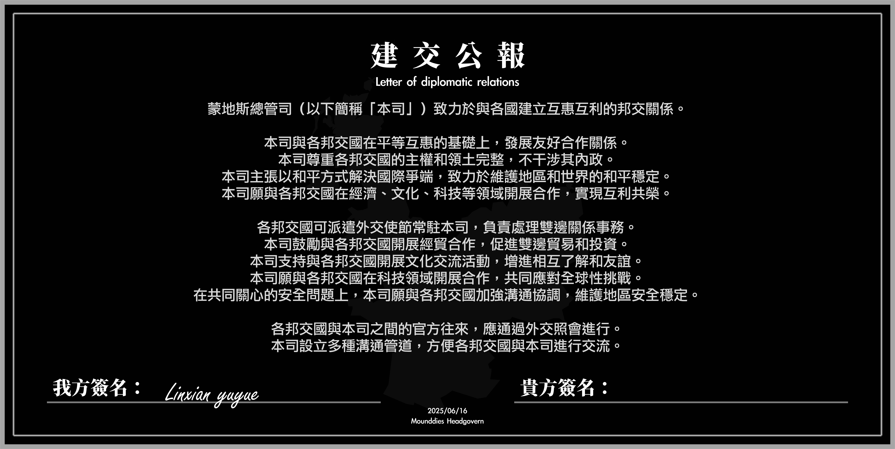國書
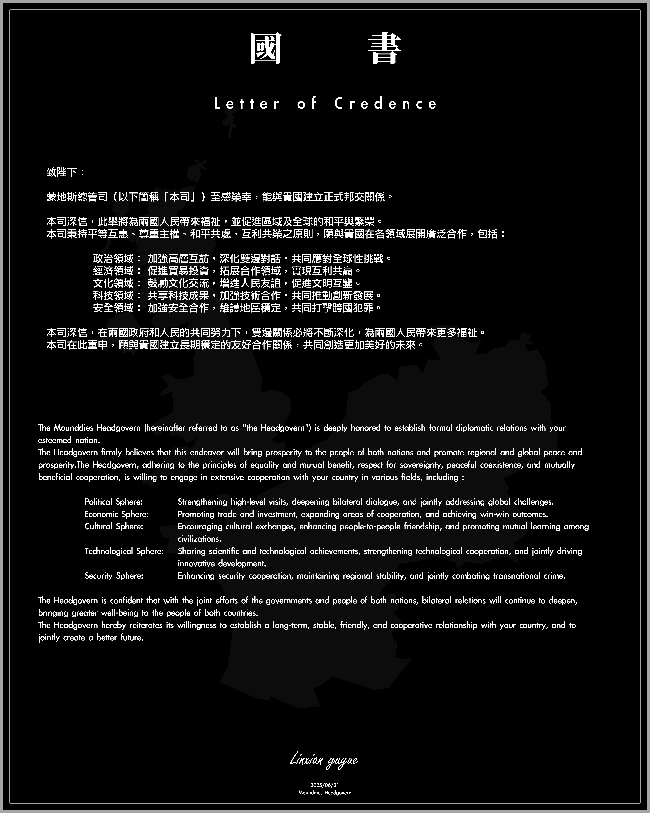公告
公告書
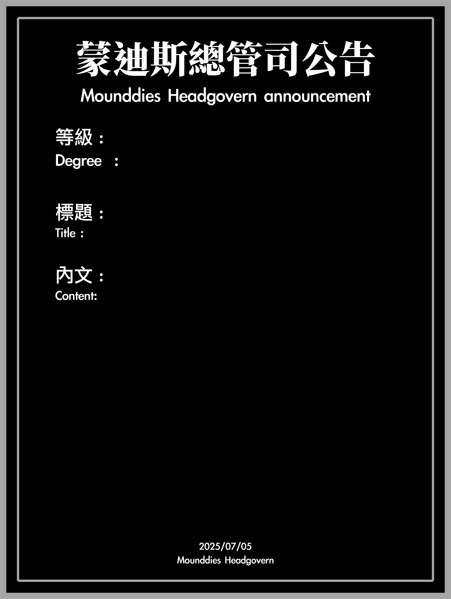級別標準
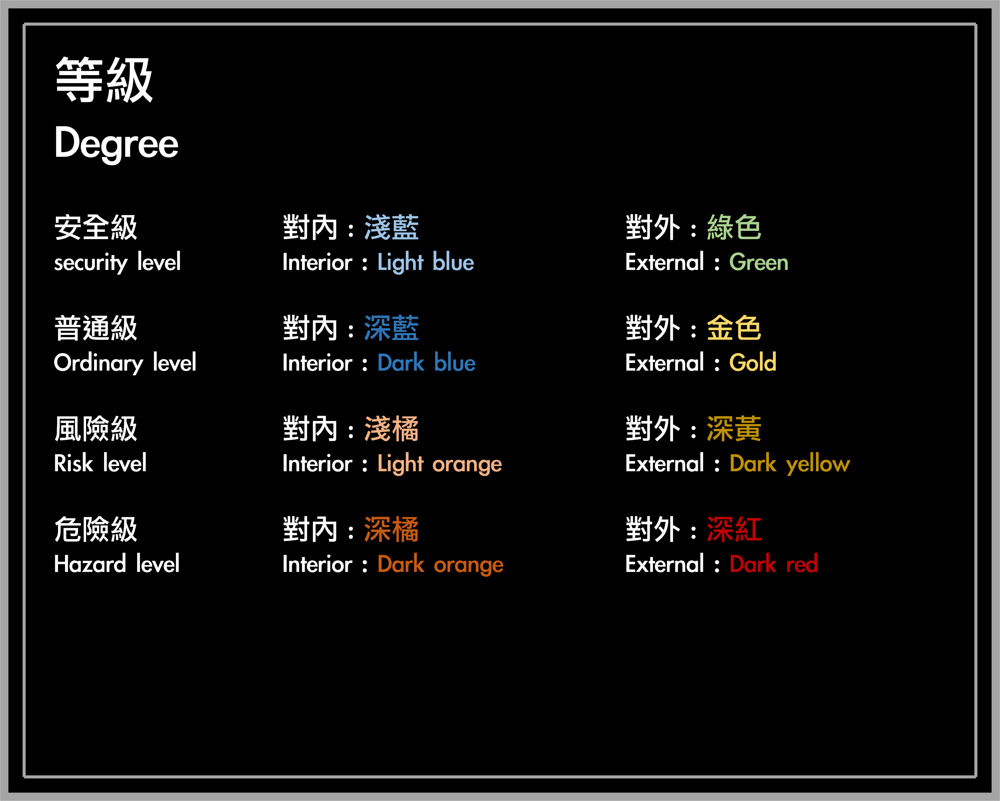交通(宣稱領土未來建設方案)
高速公路

公車

捷運

更新日誌
2025/07/09 14:11 1.1.0709
外交名單 Diplomatic List
增加各邦交國國旗
2025/07/09 14:11 1.1.0709.a
外交名單 Diplomatic List
增加邦交國瓦瑞希爾王國(🔶大使級)、華陽聯邦民主共和國(🔶大使級)
2025/07/22 17:16 1.1.0722
外交名單 / 加入組織
增加已加入組織名單
2025/08/07 20:51 1.1.0807
外交名單 / 加入組織
增加邦交國和曦民國(🔶大使級)、繼承瓦瑞希爾王國為卡利斯托利亞王國(🔶大使級)
2025/08/17 18:00 1.1.0817
外交名單 / 加入組織
增加新組織虛擬國家組織以及增加邦交國內思庫徹共和國(🔶大使級)
2025/08/18 00:30 1.1.0818
外交名單 / 加入組織
增加邦交國內獵戶座人民共和國(🔶大使級)和蒙費朗共和國(🔶大使級)
2025/08/18 21:30 1.1.0818
外交名單 / 加入組織
增加邦交國內馬思唯亞王國(🔶大使級)和卡特蘭共和國(🔶大使級)